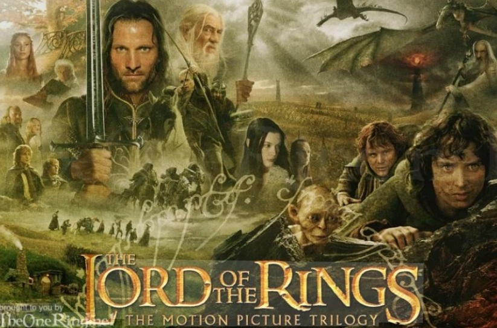
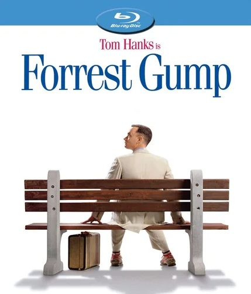
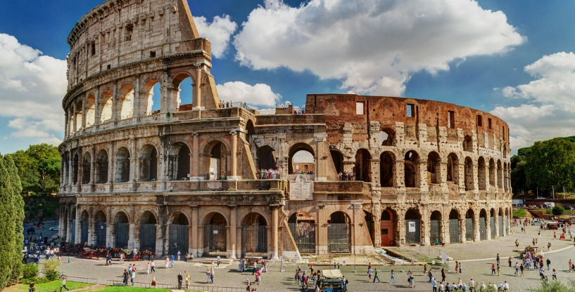
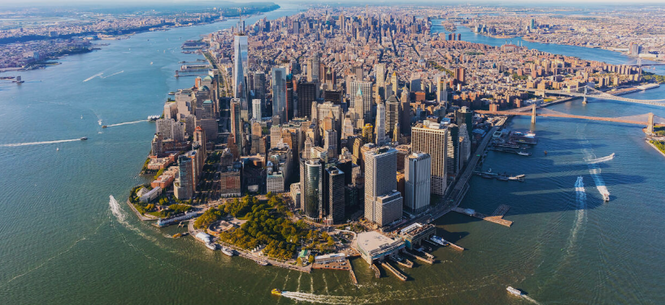
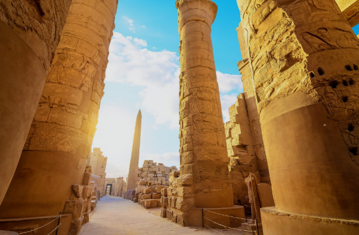
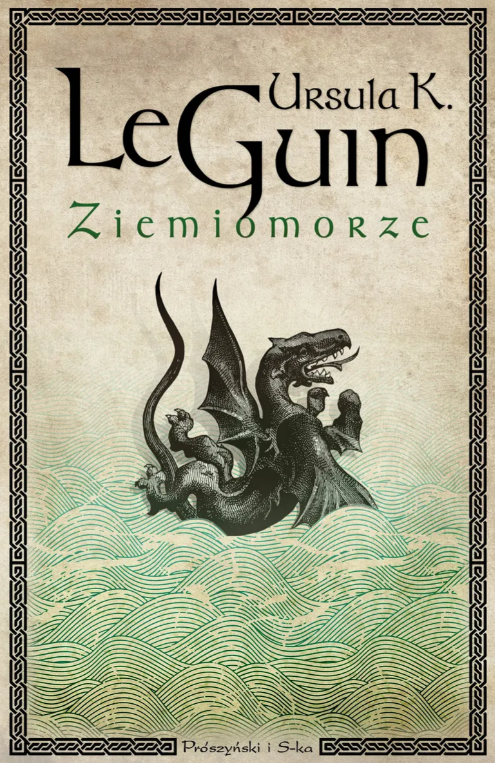
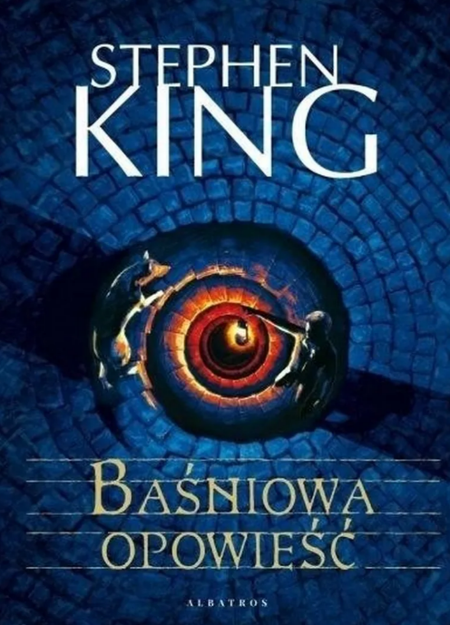
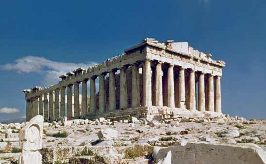
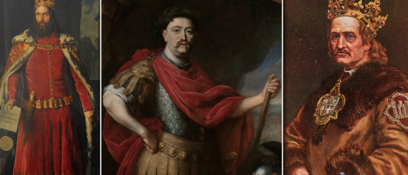
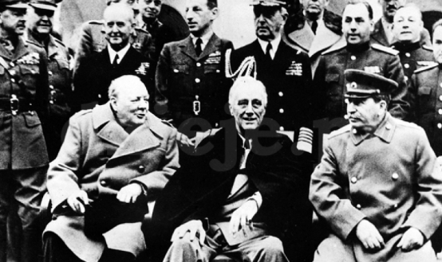

For me, cinema is the ultimate form of visual storytelling. I am fascinated by how directors use light, sound, and composition to build immersive atmospheres and evoke deep emotions. Watching a great film is like analyzing a perfectly designed user interface—every frame has a purpose, and the 'user experience' of the story must be seamless and engaging.
Below are the cinematic worlds and styles that I find most inspiring:
An epic tale of the struggle between good and evil in the world of Middle-earth. A young hobbit, Frodo Baggins, embarks on a dangerous journey to destroy a powerful artifact. This is a film about great courage, friendship, and sacrifice.

In the post-apocalyptic nation of Panem, a brutal tournament is held every year. Katniss Everdeen volunteers as a tribute to save her younger sister. A story about rebellion against tyranny and the strength of the human spirit.
The extraordinary life of a man with a big heart and a simple mind. Forrest witnesses some of the most important events in U.S. history by following simple principles. "Life is like a box of chocolates – you never know what you're gonna get."

Traveling is my way of expanding my perspective and understanding the diverse 'operating systems' of different cultures and environments. Just as a developer explores new frameworks, I enjoy discovering how history, geography, and traditions shape the world we live in today. Each journey is a lesson in adaptability and an opportunity to see the world from a completely new angle.
Below are the four destinations that have left the deepest impression on me:
Sicily is a masterpiece of history and nature. You can’t miss Mount Etna, one of the world's most active volcanoes. For history buffs, the Valley of the Temples in Agrigento offers stunning ancient Greek architecture. Don't forget to visit Taormina for its breathtaking views and the crystal-clear waters of Cefalù.
Beyond Sicily, Italy is a treasure trove of art. Rome is a living museum with the Colosseum and the Vatican. Florence is the heart of the Renaissance, housing masterpieces by Michelangelo. If you want romance, the canals of Venice are a must-see, while the Amalfi Coast offers some of the most beautiful seaside cliffs in Europe.

New York City is the ultimate urban experience—make sure to visit Times Square, Central Park, and the Statue of Liberty. For a different vibe, head to the Grand Canyon in Arizona for majestic natural landscapes. If you enjoy technology and innovation, a trip to San Francisco to see the Golden Gate Bridge and nearby Silicon Valley is highly recommended.

Egypt is the land of the Pharaohs. The Pyramids of Giza and the Great Sphinx are essential bucket-list items. In Luxor, you can explore the Valley of the Kings, where Tutankhamun was buried. For relaxation, the Red Sea resorts like Sharm El-Sheikh offer world-class scuba diving and coral reefs.

Beyond coding, I am a passionate reader of epic fantasy. What fascinates me most about this genre is the intricate world-building—the ability of authors to create entire universes with their own logic, languages, and complex rules. Exploring these vast, imaginary landscapes is much like architecting a software system: it requires imagination, consistency, and a deep understanding of how different elements interact.
Below are three masterpieces that have significantly shaped my perspective on storytelling and creative logic:
Think of this as the "Source Code" of Middle-earth. It is not a single novel but a collection of mythic narratives that describe the creation of the universe and the history of the First and Second Ages. It covers the rise and fall of the first Dark Lord, Morgoth, the tragic fate of the Elves, and the forging of the Silmarils—three divine jewels. It provides the deep historical context for The Lord of the Rings.
This is a profound tale of personal evolution and responsibility. It follows a young, talented, but arrogant mage named Ged (Sparrowhawk). In his pride, he accidentally releases a terrifying "shadow" into the world. The story is a journey of atonement, where Ged must travel to the furthest reaches of the archipelago to confront the shadow, realizing that true power comes from knowing the "True Names" of things and maintaining the world's balance.

A modern take on the hero's journey, blending reality with dark fantasy. It follows Charlie Reade, a high school student who inherits a key to a parallel world from a reclusive neighbor. Entering this hidden realm, Charlie finds a land in decay, ruled by a cruel tyrant. To save his dog and the inhabitants of this world, he must step into the role of a hero, facing challenges that echo classic fairy tales but with King’s signature gritty and suspenseful twist.

History is much more than just a collection of dates and names to me; it is the ultimate 'source code' of our modern world. I am fascinated by the cause-and-effect relationships that have shaped civilizations, much like the logic behind a complex system. Studying history allows me to understand how past decisions, strategies, and innovations continue to influence our lives today.
Below are the three historical areas that interest me the most:


